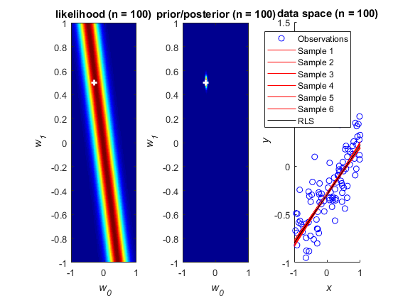
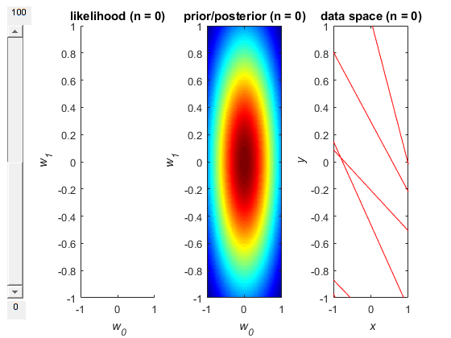

ECE414 Makeene Learning - Project 2, Part I
By Jeffrey Shih
Contents
Linear Regression, Parameter Distribution - Data Generation
clc; clear all; close all; % Model weights (we want to estimate these) w0 = -0.3; w1 = 0.5; w = [w0 w1]; % Generate random observations from uniform distribution U(x|-1,1) % We want to see the effect on increasing # of observations N on % the estimates for weights N = 100; x = rand(N,1)*2-1; % rand generates number taken uniformly from (0,1) % so scale to (0,2), then subtract 1 for (-1,1) % Find target values associated with observations t = linear_model_function(x,w0,w1); % Generate Gaussian noise of std. dev 0.2 and add to targets sigma = 0.2; noise = randn(N,1)*sigma; % scale standard normal so that std. dev becomes 0.2 t = t + noise;
Linear Regression, Parameter Distribution - Estimating Model Parameters
% Number of weight estimate samples we are taking from distribution nSamples = 6; % Noise parameter beta = 1/sigma^2; % Hyperparameter for prior alpha = 2; % Prior mean and variance % This is a distribution on the weights so the dimensions of these depend % on the number of weights m0 = zeros(length(w),1); % zero mean S0 = alpha^(-1)*eye(length(w)); % variance for prior is governed by hyperparameter alpha % Generate initial estimates based on prior only (zero-mean, std.dev alpha) % We're taking 6 different samples from the same distribution % mvnrnd generates an n-by-d matrix of random vars, repeated nSamples times w_est_prior = mvnrnd(m0,S0,nSamples)'; % METHOD 1: Estimate weights for model by drawing samples from posterior distribution % Repeat for all numbers of observations, 6 samples for each w_est_matrix = []; % matrix to store all estimated weights, N*2-by-nTrials for n = 1:N % Basis functions for the design matrix, in this case 1 and x phi0 = ones(n,1); phi1 = x(1:n); % we start from 1 observation, increase until N % Design matrix, see P142 (3.16) PHI = [phi0 phi1]; % Expressions for posterior mean and variance, see P153 (3.50, 3.51) SN = pinv(pinv(S0) + beta*PHI'*PHI); mN = SN*(pinv(S0)*m0 + beta*PHI'*t(1:n)); % column vector w_est_n = mvnrnd(mN,SN,nSamples)'; % Examine this matrix at the end to see that as N goes up, estimates % of a0 and a1 become more accurate w_est_matrix = [w_est_matrix; w_est_n]; end % Lambda is the regularization parameter % See P153, bottom, for how it is defined in this example lambda = alpha/beta; % METHOD 2: Estimate weights for model using regularized least squares % Repeat for all numbers of observations w_est_LS = []; % matrix to store all estimated weights, N*2-by-nTrials for n = 1:N % Basis functions for the design matrix, in this case 1 and x phi0 = ones(n,1); phi1 = x(1:n); % Design matrix, see P142 (3.16) PHI = [phi0 phi1]; % Expression for weights, see P145 (3.28) % Taking the Moore-Penrose pseudoinverse since PHI is not square % Slice targets such that we're only looking at THIS particular trial w_est_n = pinv(lambda*eye(length(w))+PHI'*PHI)*PHI'*t(1:n); % Examine this matrix at the end to see that as N goes up, estimates % of a0 and a1 become more acurate w_est_LS = [w_est_LS; w_est_n]; end %w_est_prior %w_est_matrix %w_est_LS
Linear Regression, Parameter Distribution - Plotting Figure 3.7
close all; % Initialize plot % We're plotting both n=1 and n=N so that publish displays 2 graphs figure; update_plot_3_7(N,N,nSamples,w,x,t,alpha,beta,w_est_prior,w_est_matrix,w_est_LS); f = figure; update_plot_3_7(0,N,nSamples,w,x,t,alpha,beta,w_est_prior,w_est_matrix,w_est_LS); % Set up slider used to change n slider = uicontrol('Parent',f,'Style','slider','Position',[10 50 20 340],... 'value',0,'min',0,'max',N,'SliderStep',[1/(N-0) 1]); bgcolor = f.Color; slider_label1 = uicontrol('Parent',f,'Style','text','Position',[10,24,23,23],... 'String','0','BackgroundColor',bgcolor); slider_label2 = uicontrol('Parent',f,'Style','text','Position',[10,390,30,23],... 'String',num2str(N),'BackgroundColor',bgcolor); % Set slider callback to update plot, need to round the slider value % because it might not be an integer slider.Callback = @(es,ed) update_plot_3_7(round(es.Value),N,nSamples,w,x,t,alpha,beta,w_est_prior,w_est_matrix,w_est_LS); 